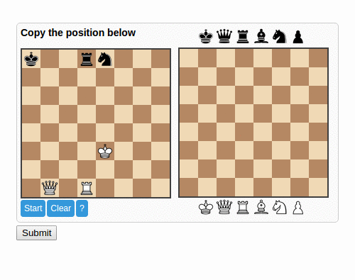
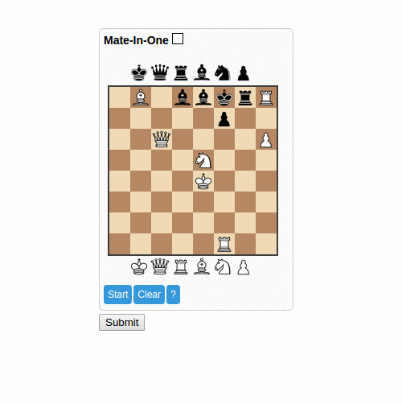
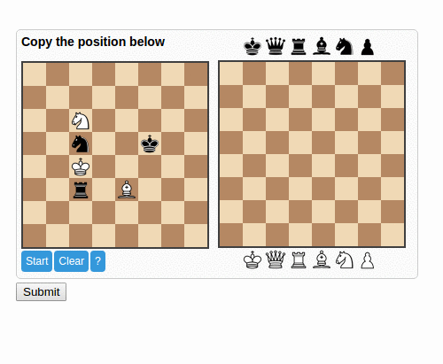

ChessCaptcha.
This is a captcha system where the user either recreates the position of the pieces on the board - non chess savvy users - or she solves a mate-in-one puzzle by putting the piece on the square where it gives the checkmate - chess savvy users only. There is also a no-js fallback that exists mostly as a placeholder for future iterations; don't use it.
Usage.
Copy the position mode. - Default
In this mode which happens to be the one where the user needs no chess knowledge at all to use, he simply drags the pieces
into the board trying to replicate the position shown in the image.

Mate in One mode
Here the user is given a position and where he has to move a piece to create a mating position on the board.
Only chess players -and maybe computer engines. cough..!- will be able to solve this. It can be used for example in chess sites
to determine if the user is really a chess player or a simple spammer.

Color Tolerance
If needed you can turn on color tolerance. In this case the validation will be color agnostic and for example the white king will be
considered equal to the black king.
